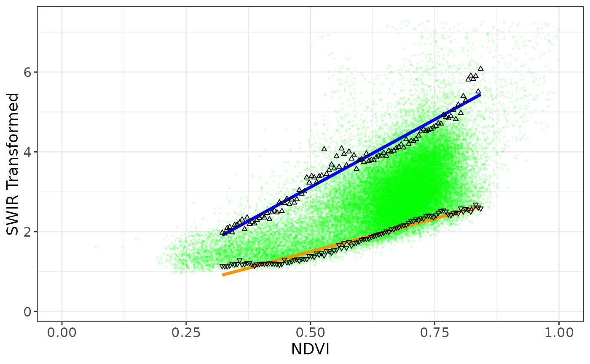
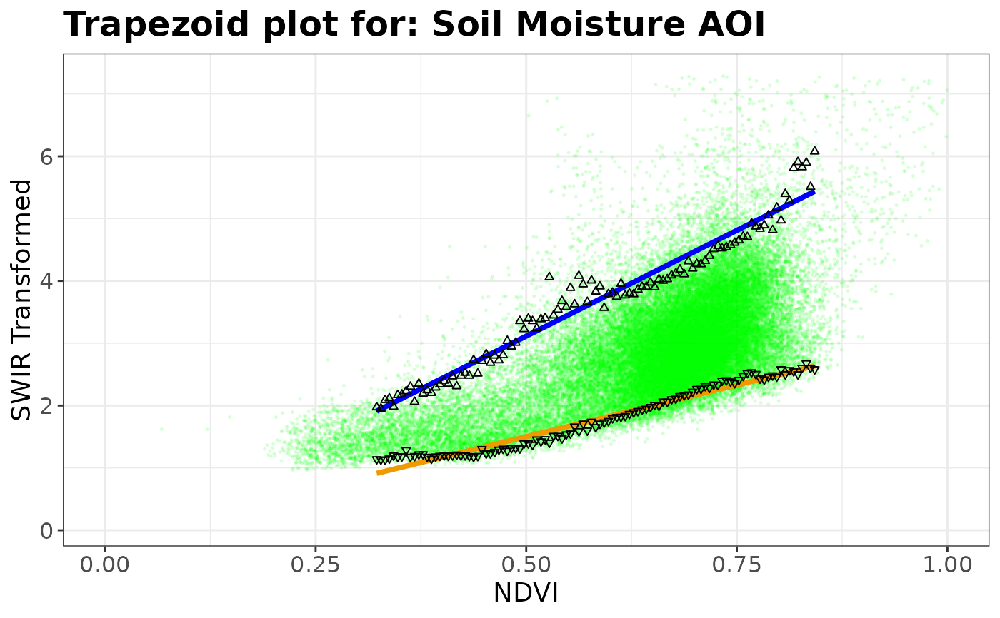

Create Scatter Plot of STR-NDVI Data Points,
Source:R/optram_wetdry_coefficients.R
plot_vi_str_cloud.RdPlot STR-NDVI scatterplot to show dry and wet trapezoid lines over scatterplot of multi-temporal STR and NDVI pixel values
Note
Points in scatter plot can be colored in various ways, depending on the
plot_colors option, as set in optram_options()
If "plot_colors = none" all points are colored green.
If "plot_colors = density" points are colored by point density on the plot.
If "plot_colors = contour" points are colored green and density contour lines
are overlayed
If "plot_colors = feature" points are colored by some feature ID
in the original AOI polygon.
If "plot_colors = month" points are colored by the month of image acquisition.
Examples
aoi_name <- "Soil Moisture AOI"
optram_options("trapezoid_method", "polynomial")
#>
#> Option for: trapezoid_method set to: polynomial
#> [1] "SWIR_band = 11"
#> [1] "edge_points = TRUE"
#> [1] "feature_col = ID"
#> [1] "max_cloud = 12"
#> [1] "max_tbl_size = 1e+06"
#> [1] "only_vi_str = FALSE"
#> [1] "overwrite = FALSE"
#> [1] "period = full"
#> [1] "plot_colors = no"
#> [1] "remote = scihub"
#> [1] "rm.hi.str = FALSE"
#> [1] "rm.low.vi = FALSE"
#> [1] "scm_mask = TRUE"
#> [1] "tileid = NA"
#> [1] "trapezoid_method = polynomial"
#> [1] "veg_index = NDVI"
#> [1] "vi_step = 0.005"
full_df <- readRDS(system.file("extdata", "VI_STR_data.rds",
package = "rOPTRAM"))
edges_df <- read.csv(system.file("extdata", "trapezoid_edges_lin.csv",
package = "rOPTRAM"))
pl <- plot_vi_str_cloud(full_df, edges_df)
#> `geom_smooth()` using formula = 'y ~ x'
#> `geom_smooth()` using formula = 'y ~ x'
#> Warning: Removed 80 rows containing missing values or values outside the scale range
#> (`geom_point()`).

pl + ggplot2::ggtitle(paste("Trapezoid plot for:", aoi_name))
#> `geom_smooth()` using formula = 'y ~ x'
#> `geom_smooth()` using formula = 'y ~ x'
#> Warning: Removed 80 rows containing missing values or values outside the scale range
#> (`geom_point()`).

pl
#> `geom_smooth()` using formula = 'y ~ x'
#> `geom_smooth()` using formula = 'y ~ x'
#> Warning: Removed 80 rows containing missing values or values outside the scale range
#> (`geom_point()`).